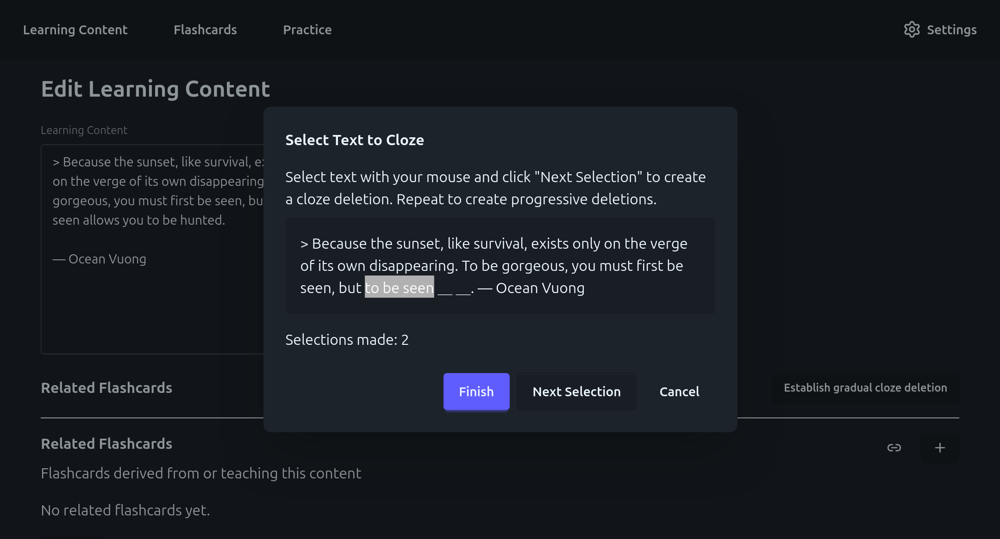
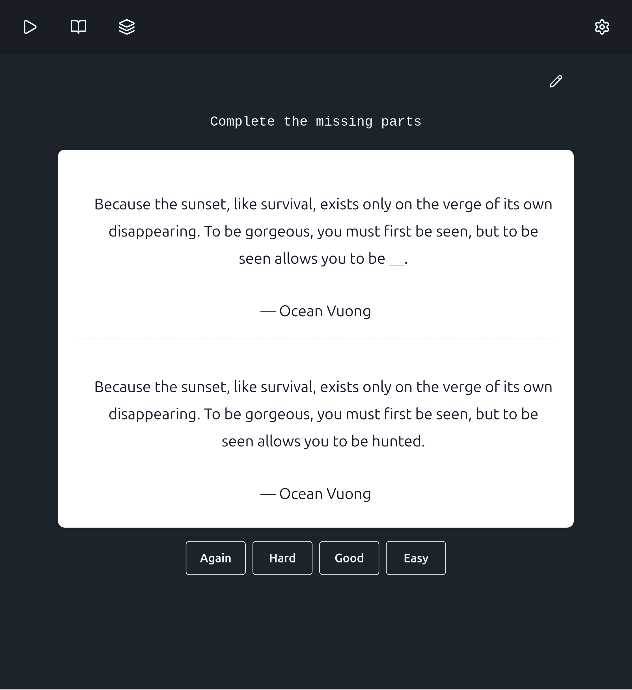
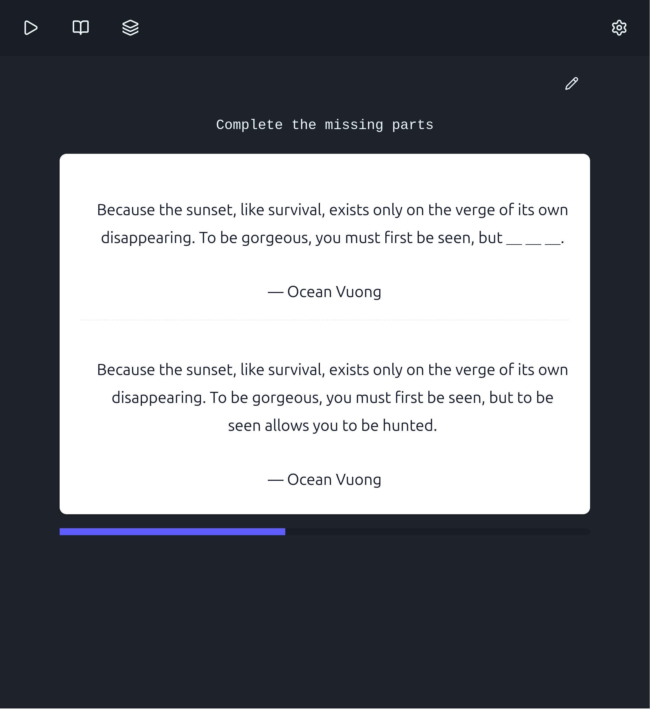

gradual cloze deletion concept for memorizing verbatim quotes with interdependent flashcards
Problem
How can we elegantly memorize a quote like:
Because the sunset, like survival, exists only on the verge of its own disappearing. To be gorgeous, you must first be seen, but to be seen allows you to be hunted.
— Ocean Vuong
Solution Concept
- Spaced Repetition is probably great to learn how to remember quotes (memoria verborum)
- However, memorizing a whole quote "in one go" is hard verging on impossible
- To solve this, we can split the memorization process into parts; we will memorize the quote from back to front (back-chaining, concept from Fluent Forever), using cloze deletion such as:
- "Complete the missing part: Because the sunset ＿＿＿＿"
- However, for that, we need multiple spaced repetition flashcards per quote to memorize, and need to learn them in a specific order (this is tedious to author, and the ordering is not supported by traditional software such as Anki)
- So we design our own webapp supporting this use case...
Screenshots

A special authoring wizard allows to quickly generate a set of staggered flashcards with increasing difficulty.
Flashcards are practiced with a classic reveal-score flow.
Harder flashcards will not come up in practice unless all their prerequisite flashcards are practiced (meaning they came up at least once and are currently notdue according to the ts-fsrs algorithm).